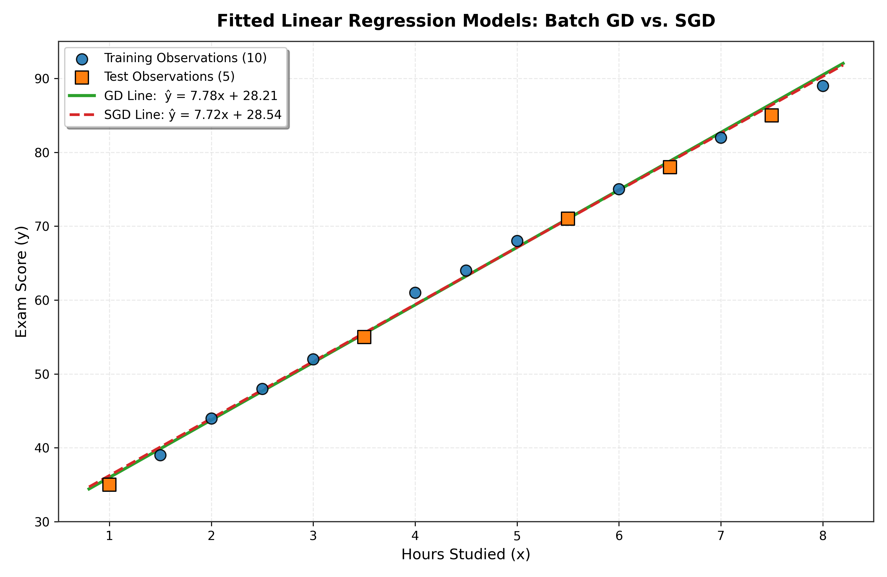

Linear Regression Using Gradient Descent and Stochastic Gradient Descent
A Comprehensive First-Principles Investigation on Parameter Optimization and Generalization
Modern machine learning frameworks (e.g., sklearn.linear_model) abstract optimization behind single-line function calls.
While convenient for industry pipelines, this hides the mathematical mechanics of how gradients adjust weights and bias from empirical residuals.
- Derive partial derivatives analytically from first principles.
- Implement Batch GD (full-batch gradients) and SGD (sample-wise gradients) without third-party optimizers.
- Directly inspect the loss trajectories and convergence behavior on identical partitions.
- Does SGD oscillate or converge cleanly compared to Batch GD?
- How do sample-evaluation budgets differ (10,000 vs. 1,000)?
- Can both methods achieve near-identical generalization on unseen test data?
Input (X): Hours Studied (1.0 to 8.0 hours)
Target (y): Exam Score (35 to 89 points)
Split Ratio: 70% Train (10) / 30% Test (5)
Seed: random_state = 42 (Strictly reproducible)
| Student | Hours Studied (X) | Exam Score (y) | Partition Role |
|---|---|---|---|
| 1 | 1.0 | 35 | Test Sample (Unseen) |
| 2 | 1.5 | 39 | Training Set |
| 3 | 2.0 | 44 | Training Set |
| 4 | 2.5 | 48 | Training Set |
| 5 | 3.0 | 52 | Training Set |
| 6 | 3.5 | 55 | Test Sample (Unseen) |
| 7 | 4.0 | 61 | Training Set |
| 8 | 4.5 | 64 | Training Set |
| 9 | 5.0 | 68 | Training Set |
| 10 | 5.5 | 71 | Test Sample (Unseen) |
| 11 | 6.0 | 75 | Training Set |
| 12 | 6.5 | 78 | Test Sample (Unseen) |
| 13 | 7.0 | 82 | Training Set |
| 14 | 7.5 | 85 | Test Sample (Unseen) |
| 15 | 8.0 | 89 | Training Set |
Linear Hypothesis:
Mean Squared Error (MSE):
Why MSE? Strictly convex quadratic bowl guaranteeing a single global minimum without local minima traps.
Let error residual: ei = yi - (w·xi + b)
Derivative with respect to weight (w):
Derivative with respect to bias (b):
- Naturally Compact Range: Hours studied spans [1.0, 8.0]. There are no multi-scale distortions (e.g. Salary vs Age).
- Well-Conditioned Contours: The Hessian eigenvalues are nearly balanced, preventing extreme zig-zag oscillations with α = 0.01.
- Direct Interpretability: Parameter w directly represents points gained per study hour (~7.7 marks/hr), and b is the baseline score (~28.2 marks).
If Z-score standardization is applied:
The Golden Rule: Never calculate μ or σ using the test set! Computing statistics on the combined dataset leaks future distribution information into model parameters.
Our project includes ZeroLeakageStandardScaler strictly implementing this guarantee.
- Initialize parameters: w0 = 0.0, b0 = 0.0, α = 0.01.
- For each iteration (1 to 1,000):
- Compute predictions for all 10 training samples: ŷ = w·X + b.
- Compute batch average gradient vector: dw and db.
- Simultaneously update parameters:
w ← w - α·dw
b ← b - α·db - Record MSE loss.
- Trajectory: Strictly deterministic and smooth descent.
- Sample Evaluations: 1,000 iterations × 10 samples = 10,000 evaluations.
- Total Parameter Updates: 1,000 updates.
- Initial Loss (iter 0): 4,117.60
- Final Training Loss (iter 1000): 0.7892
- Final Parameters: w = 7.7822, b = 28.2121
- Initialize w0 = 0.0, b0 = 0.0, α = 0.01, seed = 42.
- For each epoch (1 to 100):
- Shuffle: Randomly permute the 10 training instances.
- Sample Pass: For each individual instance (xi, yi):
dwi = -2·xi·(yi - ŷi)
dbi = -2·(yi - ŷi)
w ← w - α·dwi
b ← b - α·dbi - Record epoch-average training MSE across all 10 samples.
- Why it Fluctuates: Individual points have idiosyncratic residual noise, making single-sample gradients a noisy estimate of the batch gradient.
- Sample Evaluations: 100 epochs × 10 samples = 1,000 evaluations.
- Total Parameter Updates: 1,000 updates.
- Initial Loss (epoch 0): 4,117.60
- Final Training Loss (epoch 100): 0.7176
- Final Parameters: w = 7.7156, b = 28.5394
Ordinary Least Squares on the exact 10 training samples:
bOLS = 28.9753
Both manual algorithms converged within < 0.15 of the theoretical global optimum.
Train MSE OLS = 0.6823, Test MSE OLS = 1.0151
| Evaluation Metric | Batch GD (1000 iter) | SGD (100 epochs) | Analytical OLS |
|---|---|---|---|
| Training MSE | 0.7892 | 0.7176 | 0.6823 |
| Training RMSE | 0.8884 | 0.8471 | 0.8260 |
| Training R² | 0.9968 | 0.9971 | 0.9973 |
| Test MSE (Unseen) | 0.8636 | 0.8650 | 1.0151 |
| Test RMSE | 0.9293 | 0.9300 | 1.0075 |
| Test R² | 0.9973 | 0.9973 | 0.9968 |
| Final Weight (w) | 7.7822 | 7.7156 | 7.6379 |
| Final Bias (b) | 28.2121 | 28.5394 | 28.9753 |
- Both models exhibit nearly indistinguishable test predictions.
- Maximum absolute difference between GD and SGD on any test student is only 0.26 exam points (at 1.0 hour).
- At 5.5 hours studied, both models predict 71.0 marks, matching the actual score (71.0) with residual ~0.01!
| Hours Studied | Actual Score | GD Prediction | SGD Prediction | GD Residual (y - ŷ) | SGD Residual (y - ŷ) |
|---|---|---|---|---|---|
| 1.0 hr | 35.0 | 35.99 | 36.25 | -0.99 | -1.25 |
| 3.5 hrs | 55.0 | 55.45 | 55.54 | -0.45 | -0.54 |
| 5.5 hrs | 71.0 | 71.01 | 70.97 | -0.01 | +0.03 |
| 6.5 hrs | 78.0 | 78.80 | 78.69 | -0.80 | -0.69 |
| 7.5 hrs | 85.0 | 86.58 | 86.41 | -1.58 | -1.41 |
Fitted Regression Lines: Both Batch GD (solid green) and SGD (dashed red) lines track the empirical data points closely.
The visual overlay confirms that while the optimization trajectory differed, the learned hypothesis function is virtually identical on the original hours/marks scale.

- Batch GD: Computes the true gradient over all 10 training instances. Each step heads deterministically along the steepest descent path, producing a monotonic, smooth loss curve.
- SGD: Updates after each individual sample. Because each student observation has individual variance, sample gradients fluctuate, causing visible epoch-to-epoch oscillations.
- Small Dataset Reality: SGD evaluated 1,000 samples while Batch GD evaluated 10,000. Despite this 10× difference in evaluations, both achieved virtually identical test MSE (~0.864).
- Scale to N = 1,000,000+: Batch GD becomes unfeasible per step because computing one update requires passing the entire million records. SGD or Mini-batch GD makes rapid early progress after examining only small slices.
- Non-Convex Landscapes: In deep neural networks, SGD's noise helps parameters escape sharp saddle points.
- Small Sample Size (N = 15): High empirical variance; results are educational rather than a real-world predictive tool for student marks.
- Small Test Set (n = 5): A 1-point difference on a single student has a noticeable effect on test MSE. Small differences between GD and SGD should not be overinterpreted.
- Cautious Overfitting Assessment: Similar train and test errors suggest no obvious overfitting in this experiment, but the 5-sample test set requires interpreting this conclusion cautiously.